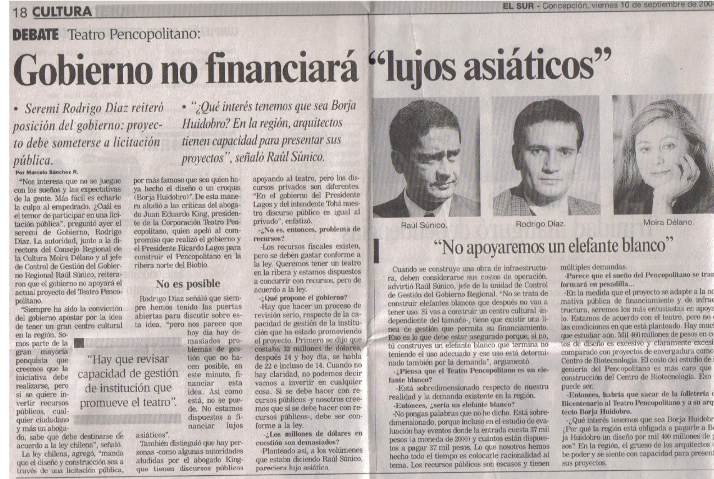
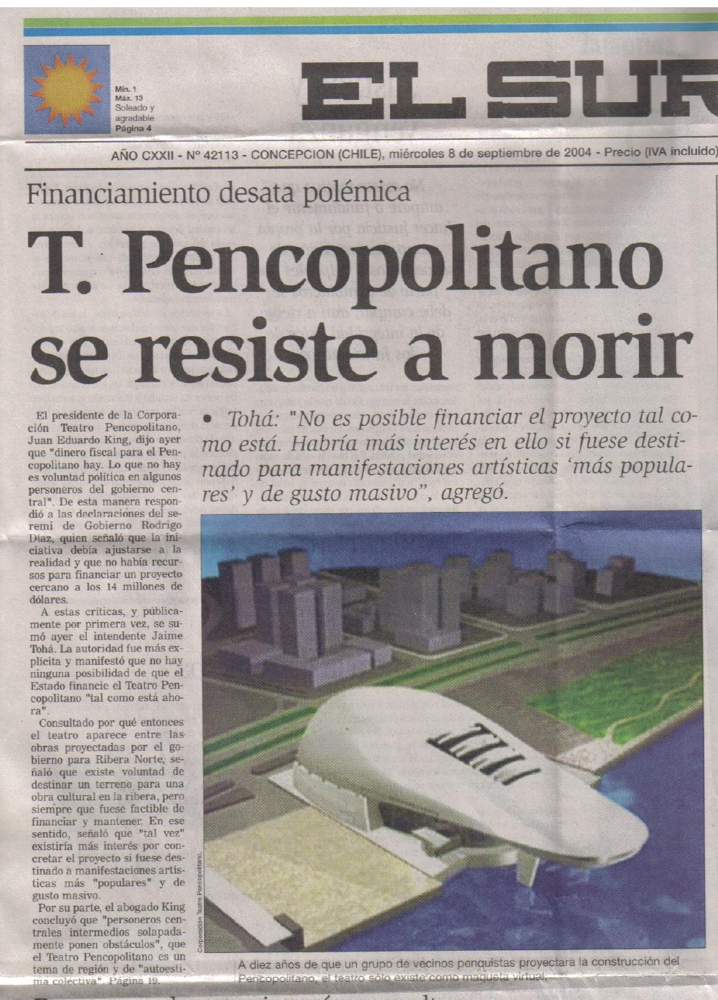
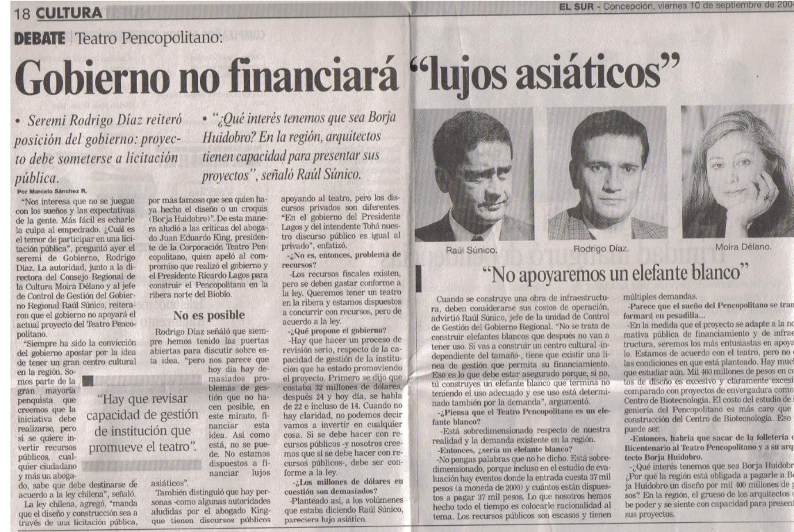
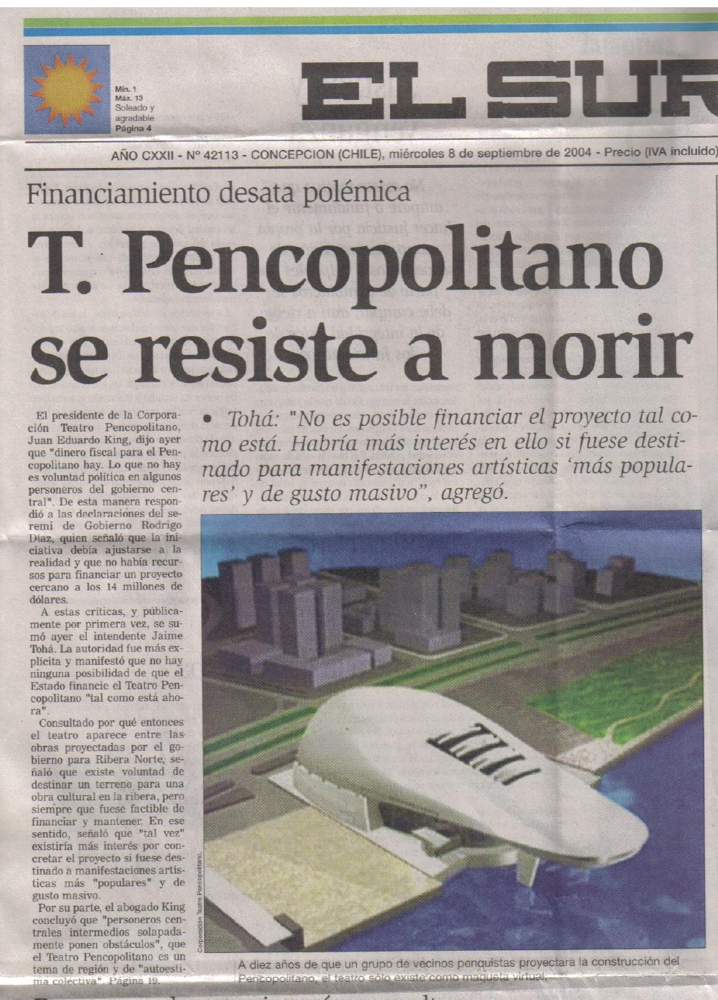

Revisando la prensa local, es evidente que, desde el concierto de Pavarotti, la iniciativa de construir un centro cultural en Concepción con los requerimientos técnicos necesarios para una diversidad de obras artísticas, desde una ópera hasta un concierto de cámara, inexistentes desde la pérdida del antiguo teatro de Orompello; fue apoyada, de una u otra forma y transversalmente, por los presidentes del país sin distinción política. La gestión para sensibilizar a la comunidad y posicionar esta cruzada fue impulsada por miles de habitantes del Bío Bío, bajo el alero de la Corporación Teatro Pencopolitano.
PRESIDENTE EDUARDO FREI RUIZ-TAGLE
Una de las primeras autoridades en apoyar esta iniciativa ciudadana, fue el presidente de la República Eduardo Frei Ruiz-Tagle y el Intendente Regional Martin Zilic, quien propuso al incipiente directorio construir el edificio a la orilla del río Bío Bío, cediendo un terreno sin costo en el proyecto Ribera Norte que recién se empezaba.
Ante esta oferta, se reunieron los arquitectos Antonio Celis, Bernardo Trumper, Werner Stehr y Enrique Amstrong y, creyendo que la remodelación de la Costanera sería una realidad en el futuro de Concepción, aceptaron el lugar como el mejor posible. El directorio de la recién formada corporación, ratificó la proposición y al arquitecto Borja Huidobro también le pareció lo mejor y, desde el primer momento, comenzó a imaginar el diseño, emplazado en el mismo lugar donde hoy está el Teatro Regional del Bío Bío.
Todas las maquetas, folletería y planos del proyecto Ribera Norte de Concepción, empezaron a considerar la construcción del teatro en el terreno que, finalmente, fue cedido por el Servicio de Vivienda y Urbanización de la Región del Biobío (Serviu) que tiene como misión institucional materializar las políticas, planes y normativas definidos por la Subsecretaría de Vivienda y Urbanismo.
Juan Eduardo King le presenta la maqueta del Teatro Pencopolitano y entrega el libro de la Corporación al presidente Eduardo Frei Ruiz-Tagle en La Costanera, junto a otros directores (en la imagen se ve a Carlos Bustamante). Al lado derecho del mandatario está Jaime Tohá, ministro de OO.PP.
PRESIDENTE RICARDO LAGOS ESCOBAR
Juan Eduardo King nos comenta que “con Ricardo Lagos, las posibilidades para concretar el proyecto del teatro no pudieron iniciarse mejor. En lo humano teníamos, lo que suele ser necesario, una buena relación. Él era demócrata de izquierda y yo demócrata de derecha y ambos habíamos estado juntos en la defensa de los derechos humanos. Una vez, cuando todavía no era candidato presidencial, en la embajada de Argentina, donde estábamos por una invitación especial, tuvimos la oportunidad de conversar de algunos temas. Para hacer el momento más ameno, quizás, me dijo que entre los dos había una relación de parientes. Esa relación consistía en que él era primo de la pianista Frida Conn Escobar, que estaba casada con el violinista Fernando Ansaldi Domínguez, quien, a su vez, era primo de Valentina Domínguez, mi esposa.
Tiempo después, cuando ya era candidato a la Presidencia de la República, vino a Concepción y quiso hablar conmigo. Supuse que podría ser por nuestro proyecto. Fui al lugar de la reunión, una sala del Hotel Araucano. Me acompañaron el director Werner Stehr y nuestra gerente, Pilar García. Había acertado, el tema era el Teatro Pencopolitano. Quería hacer una promesa de campaña. A nosotros nos pareció excelente. Esa tarde estuvimos él y yo en un programa de la televisión local. Sus palabras de elogio al proyecto del teatro no pudieron ser más halagadoras, su compromiso fue público, personal y oficial. Quedamos más que felices. Tras esas palabras nadie dudó que el teatro sería una realidad.
En la Corporación, seguimos trabajando con más entusiasmo. Con el triunfo de Ricardo Lagos como presidente de la República, ya podíamos imaginar cómo habría de ser la inauguración y su administración. Werner Stehr, arquitecto y miembro del directorio, propuso levantar una gigantografía en el terreno, cedido por el presidente Frei. El directorio lo aprobó y se consiguieron los recursos de varias empresas. Se instaló el letrero en la Costanera. Nadie que fuera por ahí, podría dejar de ver la imagen proyectada de este espacio cultural”.
A esas alturas, la Universidad de Concepción y el Centro Regional de Estudios Públicos habían hecho una encuesta con el objetivo de conocer la percepción que los habitantes de las comunas de Concepción, Talcahuano, San Pedro de la Paz y Chiguayante sobre el proyecto. Hualpén, entonces, formaba parte de Talcahuano y, como el estudio fue hecho poco antes de la creación de esa comuna, por consiguiente, incluyó a sus habitantes. Se consultó sobre el teatro a hombres y mujeres de distinto nivel socioeconómico y edad. El resultado general dio un resultado de 87% de aprobación, un 8% de no aprobación y un 5% que no respondió. La aceptación ciudadana fue más que contundente.
Sin embargo, a pesar del apoyo popular y la palabra del presidente de la República, reapareció una barrera que de nuevo hacía desaparecer la ilusión de concretar el objetivo de nuestros desvelos: en la portada del diario El Sur, el 7 de septiembre de 2004, se publicó con un gran titular “No hay plata fiscal para el Pencopolitano”. Era la opinión del secretario regional ministerial de Gobierno, Rodrigo Díaz. Su propuesta era que los congresistas debían considerar integrar el proyecto en la ley de presupuesto, lo que, contradictoriamente, no es de competencia parlamentaria.
Al día siguiente, el nuevo titular de El Sur, decía: “Teatro Pencopolitano se resiste a morir”. Contestando a Rodrigo Díaz, Juan Eduardo King, como presidente del directorio, expresó que “dinero fiscal para el Pencopolitano hay. Lo que no hay es voluntad política de algunos personeros de gobierno”. Luego, vino la opinión en la prensa del propio intendente, Jaime Tohá, quien declaraba que “No hay ninguna posibilidad de que el Estado financie el Teatro Pencopolitano tal como está ahora”. A la pregunta periodística de por qué, entonces, de las obras proyectadas para la Ribera Norte de parte de la Seremi de Vivienda, figuraba el Teatro Pencopolitano, respondió que “tal vez existiría más interés por concretar el proyecto si fuese destinado a manifestaciones artísticas más populares y de gusto masivo”.
El 8 de septiembre, insistió diciendo: “tal vez existiría más interés por concretarlo si fuere un proyecto destinado a manifestaciones artísticas más populares y de gusto masivo, no necesariamente para la ópera o música clásica”. Además, señaló que por muy prestigioso que sea el arquitecto Borja Huidobro habría que hacer un concurso de arquitectura, donde podría participar el propio Huidobro. Rodrigo Díaz insistió en que el proyecto debería someterse a licitación pública. El 10 de septiembre, el nuevo titular fue que el “Gobierno No financiará lujos asiáticos”. Con las opiniones de Raúl Súnico, jefe de Control de Gestión del Gobierno Regional; Rodrigo Díaz, Seremi de Gobierno, y Moira Délano, Seremi de Cultura. Se ratificaba, además, que el proyecto debía ser sometido a licitación pública y que, por más famoso que fuese el arquitecto Borja Huidobro, en la región los había también con la misma capacidad.
 



El jueves 9 de septiembre, Jacqueline van Rysselberghe, alcaldesa de Concepción, respondía con el titular: ”El Intendente debe defender a la Región”. Decía que “como dice el presidente, cuando los compromisos existen, se cumplen. El Teatro Pencopolitano es un proyecto bicentenario y es un compromiso personal del Presidente Lagos”. Juan eduardo King me dijo al respecto que: “La edil tocaba un punto clave, una pregunta que nos hacíamos en la corporación desde la primera publicación objetatoria del teatro, expresada por el secretario ministerial Díaz: ¿Cómo funcionarios públicos se atrevían a ir contra la voluntad y promesa del Presidente de la República, del que dependían? Ricardo Lagos era conocido por su gran carácter. Entonces, surgía la duda razonable: ¿estaba Lagos respaldando a las autoridades regionales?”.
El jueves 9 de septiembre de 2004, bajo el titular “La Mediocridad No Detendrá al Pencopolitano”, King respondía los comentarios sobre el proyecto: “Ni el Intendente Tohá, ni toda la mediocridad unida, van a impedir que se construya el Centro Cultural Teatro Pencopolitano. El 86% de la población cree que será un aporte al desarrollo de la región. La mediocridad incapaz de ser constructiva, se solaza hoy ante la posibilidad de destruir el esfuerzo ajeno, de quienes son capaces”. Luego, señalaba que “el intendente falta a la verdad. Él conoció, desde que asumió la Intendencia, que el proyecto era de Borja Huidobro y le dio su respaldo. Entiendo que al intendente pueda no gustarle la ópera, la música clásica y que prefiera los graffitis en las murallas públicas, pero pudo enterarse que a la ópera Elixir de Amor, realizada en el Foro de la Universidad de Concepción, asistieron 5 mil personas o en las que la CORCUDEC en varias presentaciones de 1200 asistentes cada una agota también sus entradas pagadas. Debería saber que en la comunidad los gustos son variados. Sólo Pavarotti, por iniciativa del Pencopolitano y apoyo de la Municipalidad de Concepción, reunió a 17.000 personas en el Estadio Collao de la ciudad ¿Cuáles son los gustos masivos? Mantengo la confianza en el Presidente Lagos, en nuestros alcaldes, concejales y parlamentarios que, sin excepción, nos han apoyado y, sobre todo, en las personas”.
En esa semana de septiembre, el tema del teatro removió todo el ambiente regional. Así lo apreciamos de sólo leer los titulares del diario local El Sur. Y agréguese editoriales como la del viernes 10 de septiembre y cartas destacadas como de Francisco Larenas, Nicolás Martínez-Conde y Francesca Olivari, titulada “Negativa genera estupor”, señalando que decir que “el Teatro Pencopolitano es elitista es una barbaridad”. Y hay mucho más.

El viernes 10 de septiembre, cuando la discusión pública había llegado a un elevado grado de intensidad, la corporación recibió una llamada del senador José Antonio Viera Gallo desde los Estados Unidos. Decía que lo que estaba ocurriendo no podía continuar, que había que buscar una solución. Para ello, el presidente Ricardo Lagos nos pedía que el lunes 13 de septiembre de 2004, a las cinco de la tarde, estuviéramos en La Moneda para reunirnos con él.


Juan Eduardo King me relata: “A las cinco en punto de ese día, ya estábamos en La Moneda para defender la posición del teatro regional, los senadores José Antonio Viera Gallo, Hosain Sabag y Augusto Parra; los alcaldes de Concepción y Chiguayante, Jacquelinne Van Rysselberghe y Tomás Solís; Rodrigo del Valle, representando a las empresas colaboradoras de la iniciativa; Eduardo Meissner, director; Pilar García Royo, gerente, y yo, como presidente del directorio de la Corporación Teatro Pencopolitano. Unas horas antes del esperado encuentro, el propio senador Viera Gallo, nos informó que, lamentablemente, como el Presidente Lagos estaría en una actividad con deportistas destacados que no podía postergar, nos recibiría, en su representación, el Ministro del Interior, José Miguel Insulza.
La reunión fue corta y amena. No podía ser de otra manera, todos, incluso el ministro, estuvimos de acuerdo que lo del teatro era materia decidida y que siempre había tenido el apoyo del Presidente Lagos. En cuanto a lo que exigían las autoridades regionales de que se hiciera un concurso público para definir el teatro a construir, eso era innecesario, porque existían normas que permitían obviarlo. Y puso, como ejemplo, el cuadro de Matta que está exhibido en La Moneda: “Queríamos que un cuadro del muy excelente pintor nacional estuviera en un lugar destacado aquí en el Palacio de La Moneda. Entonces, cómo podríamos hacer un concurso público para comprar un cuadro de Matta. En Concepción, se quiere el Teatro de Borja Huidobro, eso es un hecho, se da el mismo caso que con el cuadro de Matta. Tiene un apoyo ciudadano contundente.” Entonces, nos dio el respaldo total para continuar con nuestro proyecto. Y, lo más importante, nos dijo que contaríamos con 400 millones de pesos para los proyectos de arquitectura, ingeniería y otros necesarios.
Nos volvimos a Concepción más que contentos. Fue un viaje agotador, salimos en la mañana y estábamos de regreso en Concepción a la medianoche. En mi auto, íbamos Rodrigo del Valle, Pilar García y yo. En otro auto, Tomás Solís, que igual que nosotros, fue y volvió en el mismo día, exclusivamente para la ocasión”.
La noticia de lo ocurrido en Santiago, produjo alegría y satisfacción. El 14 de septiembre, El Sur destacó en portada: “Destrabado 400 millones de pesos, Gobierno da su respaldo al Pencopolitano”. En el reportaje al interior, titulaba: “Gobierno entregará subvención al Pencopolitano”. Y en la bajada de titular: “Corporación Cultural Teatro Pencopolitano logró el compromiso del gobierno central de apoyar el financiamiento de los necesarios estudios de ingeniería antes de la licitación formal de la obra.”
Se entregaron muchas opiniones: Tomás Solís, alcalde de Chiguayante, dijo reconocía que “la región tiene problemas, pero también hambre de cultura. El gobierno reafirmó el apoyo al proyecto y se comprometió a buscar fórmulas que faciliten el otorgamiento de los recursos”. El senador Eduardo Frei señalaba: “Esta región y el sur de Chile merecen tener una obra de esta magnitud. Se debe construir algo digno y de calidad. No seamos rascas para construir nuestras obras”. El senador Augusto Parra dijo que el Pencopolitano era “una iniciativa absolutamente viable” y el senador Hosain Sabag que estarían los recursos para la ejecución del teatro, dado que “el Gobierno Regional ya los tenía destinados”. Mientras que el senador José Antonio Viera Gallo sobre los dichos de algunas autoridades regionales dijo: “El diablo mete la cola. Está en los detalles, pero no en la voluntad”. Y así, muchos más expresaron su opinión favorable a la iniciativa. Entre ellas, la columna de Rodrigo Colarte, quien terminó diciendo: “La Región del Biobío tiene la oportunidad de iniciar un ciclo cultural virtuoso que comprometa a nuestra gente con el desarrollo de la cultura. Nada puede resultar más contradictorio que las autoridades regionales se muestren contrarias o con dudas sobre la construcción del Teatro Pencopolitano. Pues tal falta de visión y compromiso nos enfrenta a una increíble paradoja: el gobierno central – léase Santiago – sabe mucho mejor lo que es bueno para la región, que nuestros representantes locales”.
Como broche de oro y cierre de la polémica periodística, causada por la postura de la Intendencia Regional contra el proyecto, El Sur publicó en su editorial, el miércoles 15 de septiembre de 2004, una caricatura humorística de un partido de tenis que tenía como jugadores a Juan Eduardo King y Raúl Zúnico. El presidente de la corporación aparece ganándole el punto final al funcionario de la intendencia. En el público salen Jacqueline Van Rysselberghe, alcaldesa de Concepción, celebrando el triunfo de King; el intendente Jaime Tohá, agarrándose la cabeza y la seremi de cultura, Moira Délano, comiéndose las uñas. El árbitro es el ministro del Interior, José Miguel Insulza.


A pesar del apoyo presidencial, los proyectos técnicos presentados al Gobierno Regional avanzaron muy lentamente. Pilar García Royo, gerente de la corporación, me contó que “iba casi todas las semanas a dejar correcciones a la Secretaría de Planificación en el primer piso de la Intendencia y siempre volvía con nuevas observaciones de parte de los técnicos a cargo. Y así fue hasta que terminó el gobierno de Lagos. Todo quedó en nada”. Entonces, muchos se preguntaron si el 96% de apoyo ciudadano al Teatro Pencopolitano habría sido la razón del supuesto apoyo del mandatario. Quedó la duda sobre la actitud del intendente y demás funcionarios regionales para eludir un compromiso presidencial que fue una promesa personal. Y por qué el presidente aceptó esa desobediencia sin sacarlos del cargo. También si el apoyo desde la presidencia fue sólo para calmar todo el revuelo generado en la prensa con un evidente apoyo ciudadano.
Le pregunté a King qué opinaba sobre el particular y me dijo: “La verdad es que objetivamente y como abogado necesito pruebas para afirmar como verdaderas tales suposiciones. La presunción basada en antecedentes concretos puede ser una forma de probar, pero creo que no es suficiente. En el mejor de los casos, eso sí, se trató de un error inimaginable”.
Poco antes del término del Presidente Lagos, socios y amigos de la Corporación Teatro Pencopolitano se las ingeniaron para colgar un lienzo sobre el letrero monumental de la Costanera en el terreno designado para su construcción, que decía: “PROMESA INCUMPLIDA DE LAGOS”. King que estuvo en el lugar, nos cuenta que “los funcionarios gubernamentales ahora sí se movieron de prisa, buscando escaleras y personas que se subieran a descolgar el letrero”.
PRESIDENTA MICHELLE BACHELET JERIA
“Cuando Michelle Bachelet Jeria asumió la presidencia de Chile el 11 de marzo de 2006, en la corporación ya sabíamos lo que venía” me relata Juan Eduardo King y prosigue: “La nueva mandataria, en su primer gobierno, no se pronunció por apoyar al proyecto ciudadano del Teatro Pencopolitano. Después de un tiempo sin novedades al respecto y, asumiendo que nuestro objetivo de construir un centro cultural ya no tenía ninguna posibilidad, nos reunimos en sesión extraordinaria de directorio. La primera intención fue disolver la corporación y comunicar a la opinión pública el hecho; mas, después de darle la palabra a cada uno de los directores, surgió la idea que, en vez de disolución, acordáramos declararnos en receso.
La idea era no seguir desgastándose sin la esperanza de lograr nuestro principal objetivo, nuestro motor. Quizás, en el futuro se dieran de nuevo las circunstancias para perseverar en nuestro empeño. Así se decidió, no más sesiones, no más pago de cuotas y, como las marmotas, dormirnos hasta que de nuevo apareciese una oportunidad para el teatro.”
Pasaron casi cuatro años y vinieron nuevas campañas electorales a fines de 2009. La elección presidencial fue disputada por ocho candidatos: Eduardo Frei Ruiz-Tagle por la Concertación de Partidos por la Democracia, Jorge Arrate por Juntos Podemos, Marco Enríquez-Ominami por la Nueva Mayoría para Chile y Sebastián Piñera Echeñique por Coalición por el Cambio, el mismo a quien un día Antonio Celis, arquitecto y director de la corporación, le detalló el proyecto arquitectónico en nuestra sede de Aníbal Pinto.
¿Se acordaría del proyecto? Al parecer sí, ya que como candidato vino a Concepción y pidió reunirse con Juan Eduardo King. Se juntaron en un café que queda en la planta baja de la Municipalidad de Concepción, en O'Higgins esquina de Rengo. Después de los saludos, lo primero que hizo fue preguntar por el teatro del que guardaba un claro recuerdo. Confesó que pensaba que era una necesidad para la ciudad y la región. King le hizo un resumen de todo lo ocurrido y le informó que estaban en receso hasta que se diera una nueva oportunidad para reactivarse. “La oportunidad llegó” le dijo y lo autorizó para decir que el Teatro Pencopolitano era su compromiso personal.
“Eran los últimos días de gobierno Bachelet -cuenta King- se reactivó la Corporación y volvimos con entusiasmo a lo que añorábamos: trabajar por el Teatro Pencopolitano. El muerto resucitaba una vez más”.
PRESIDENTE SEBASTIÁN PIÑERA ECHEÑIQUE
Llegó el momento en que Sebastián Piñera Echeñique fue elegido presidente de la República y con su investidura llevó a La Moneda el compromiso personal que tenía con nosotros de construir el Teatro Pencopolitano. Pero, siempre hubo un pero, en la andadura por el camino hacia el teatro. Antes de que él ya asumiera como Presidente de Chile, se produjo el devastador terremoto del 27 de febrero de 2010. Concepción y la región quedó en ruinas, edificios caídos o inutilizados, casas en el suelo, caminos y puentes cortados, Dichato arrasado por los movimientos sísmicos y barrido por el maremoto. Una destrucción de tal magnitud que las palabras no bastan para describir lo vivido ese día y los posteriores, agravados por los saqueos.
King me relata: "Lo que sentimos luego de algún tiempo, cuando nuestras mentes se tranquilizaban, es que ahora sí el proyecto del teatro quedaba sepultado para siempre. La naturaleza había logrado lo que algunos humanos con poder negativo no habían sido capaces. Como el trabajo de reconstrucción se veía de una magnitud gigantesca y de larga duración, seríamos unos irresponsables, desubicados y deshumanizados si sobre las ruinas y el dolor, reclamásemos la materialización de la promesa que nos interesaba. El teatro existente en nuestra imaginación en contraste con los edificios reales destruidos, debía quedar sepultado por mucho tiempo".
Sin embargo, la esperanza no murió totalmente. Tan pronto Sebastián Piñera asumió la presidencia, procedió a designar ministros, intendentes y funcionarios de las distintas reparticiones. Entre estos, Juan Eduardo King fue designado director Regional de Cultura y las Artes en la Región del Biobío: “Y yo, que nunca quise ser funcionario público, en consideración a quien me lo pedía, acepté el cargo. Pero, incluso, una vez asumido, no veía cómo podríamos activar el proyecto del teatro. Nuestro proyecto estaría en pausa y no sabía hasta cuándo. Lo que hicimos en la Corporación Teatro Pencopolitano me sirvió mucho para hacer un trabajo que creo fue productivo en esa repartición pública. Así, lo ejecutado con Carlos Bustamante en Santa Juana, donde vimos a personas de diversas condiciones económicas y educacionales, emocionadas con el canto lírico, me hizo apoyar con fuerza el proyecto del tenor Alexis Sánchez de “Ópera en la Plaza”. Se presentó en 34 comunas. Fui a verlas personalmente a San Rosendo, Florida y Chillán y fui testigo de cómo reaccionaban los asistentes en cada una de las presentaciones. Al constatar la manera en que se conmovían hombres, mujeres, adultos, jóvenes, todos, sin diferencias, se confirmaba en mí la importancia de la música en la sociedad”.
Después de un año de reconstrucción, de habilitación de casas para los damnificados que lo habían perdido todo, el presidente Piñera volvió a lo de cumplir su programa de gobierno, cosa que manifestó siempre, parado, por decirlo gráficamente, sobre escombros. Un día llamó al intendente Víctor Lobos, para decirle que había que comenzar ya con lo del teatro, usando una oración que hoy por hoy, recordando su trágica pérdida el 6 de febrero de 2024, nos habla de la ironía del destino: “antes de que se nos vaya King”. Y así recomenzó todo”.